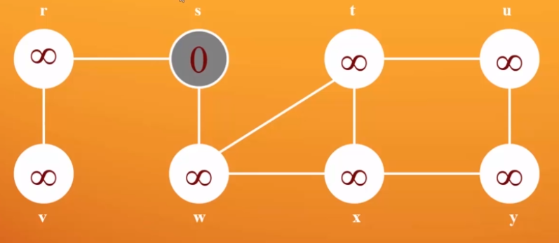
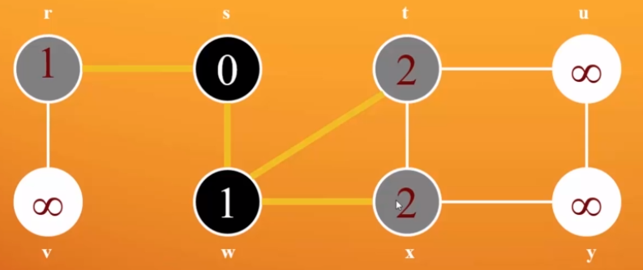

SUPERHERO SOCIAL NETWORK

DEGREES OF SEPARATION
- Iron man 1 degree from Hulk
- Iron man 2 degrees from Spiderman
Building a graph
// Build up our vertices
val names = sc.textFile("../marvel-names.txt")
val verts = names.flatMap(parseNames)
// Build up our edges
val lines = sc.textFile("../marvel-graph.txt")
val edges = lines.flatMap(makeEdges)
// Build up our graph, and cache it as we're going to do a bunch of stuff with it.
val default = "Nobody"
val graph = Graph(verts, edges, default).cache()
DOING STUFF
- Top 10 most-connected heroes:
graph.degrees.join(verts).sortBy(_._2._1, ascending=false).take(10).foreach(println)
BFS INITIALIZATION
// Initialize each node with a distance of infinity, unless it's our starting point
val initialGraph = graph.mapVertices((id, _) => if (id == root) 0.0 else Double.PositiveInfinity)

SENDING MESSAGES
triplet => {
if (triplet.srcAttr != Double.PositiveInfinity) {
Iterator((triplet.dstId, triplet.srcAttr+1))
} else {
Iterator.empty
}
}

PRESERVING THE MINIMUM DISTANCE AT EACH STEP (shortest path)
-
Pregel's vertex program will preserve the minimum distance
between the one it receives and what it has:
(id, attr, msg) => math.min(attr, msg)
-
Its reduce operation preserves the minimum distance if multiple
messages are received for the same vertex:
(a,b) => math.min(a,b)